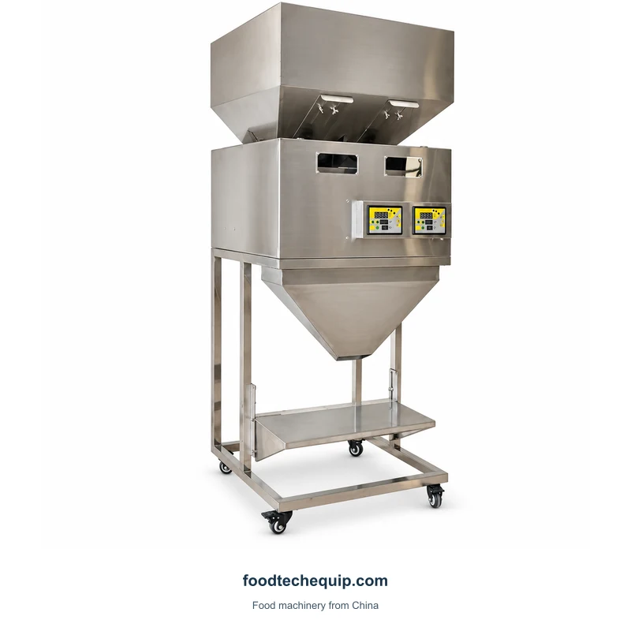
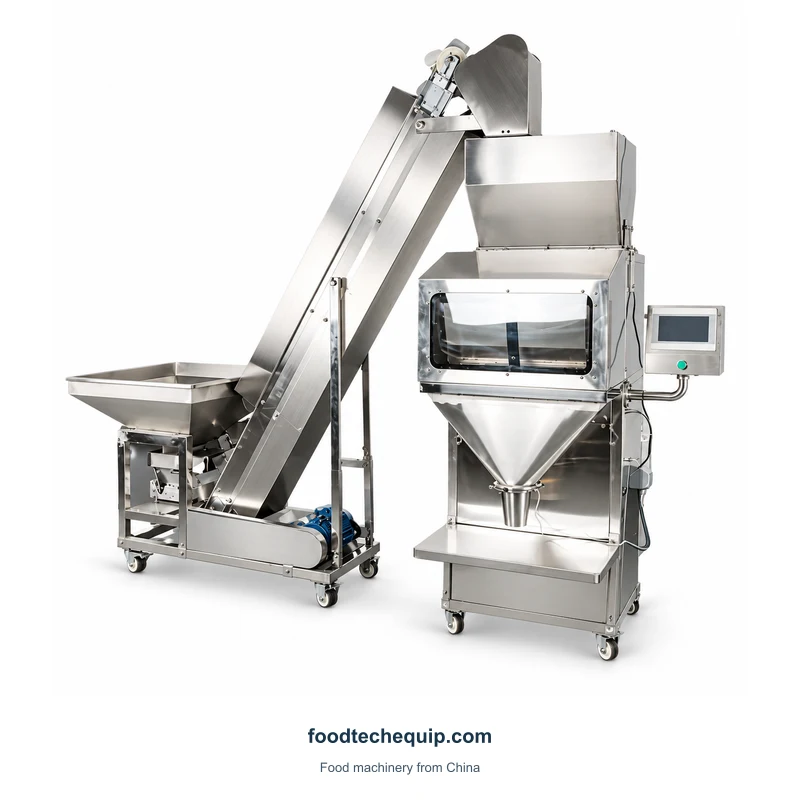
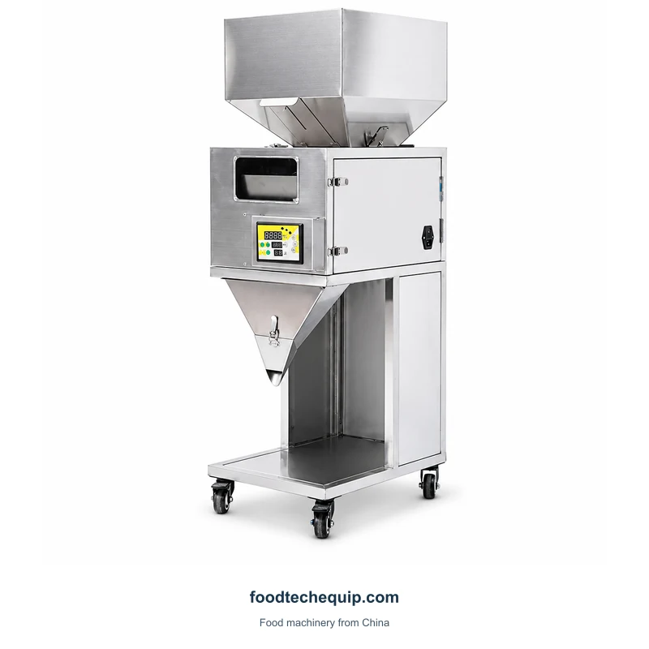
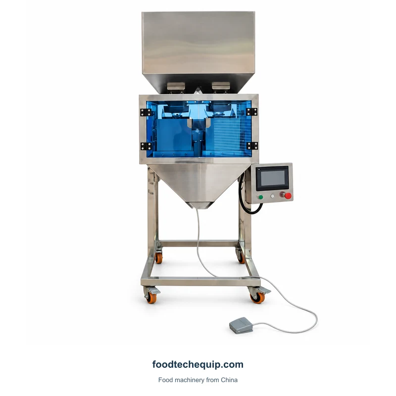

Dosing Equipment
Dual-Channel Granule Dosing Machine
Dual-channel granule dosing equipment with hopper feeding and a supported discharge section.
View equipment
Select the image to view it larger.
A granule dosing system with an elevator and supported discharge section.
Equipment selection · Installation guidance · Remote support
Explore product information ↓Provide the incoming material supply height and the collection-container dimensions. Review the elevator-to-dosing interface as well as the 1500 configuration itself.
Define a Filling or Dosing Application ↗| Parameter | Value | Unit | Configuration |
|---|---|---|---|
| Filling rate | 10-15 | bottles/min | 1500 |
| Applicable bottle height | 20-400 | mm | 1500 |
| Applicable bottle diameter | 50 | mm | 1500 |
A measured dose still needs a receiving container or bag. Identify whether your next step is filling a container, forming a sachet or closing a filled bag, and show how the portion reaches that step.

Dual-channel granule dosing equipment with hopper feeding and a supported discharge section.
View equipment
A compact hopper-fed granule dosing machine with controls and a wheeled cabinet.
View equipment
Granule weighing and dosing equipment with a hopper, discharge section and support frame.
View equipment